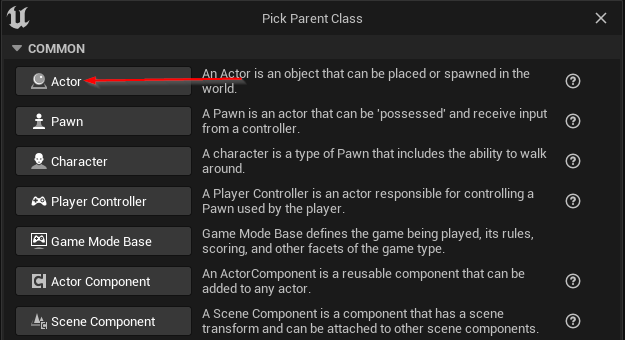

Adding a portal to your Metaspace
The Your Open Metaverse plugin allows creators to design their own portals. This guide will explain how to create and use your own portals with our ecosystem. If you just want to use our default portals, you can use the portals in the Content Browser under Plugins -> YOM Content -> Portals and skip to step 2. The portals that you can use are the YomDefaultPortal and the YomFXPortal, where the YomFXPortal is more visually appealing. Note that you must have the option Allow teleporting set to true, you can verify this by going into your MetaspacePlayer and checking if it has a YomPortallingComponent.
Step 1: Creating a Custom portal
To create a custom portal you will have to create a new blueprint asset. Right-click in a folder in the Content Browser and under Create Basic Asset click on Blueprint Class.

This will open op the blueprint dialog box in which you can search for YomPortal. Once you find the YomPortal class select it.

You can now start to customize the portal in every way you like. If you want the plugin to automatically set the material you must set Details -> Auto Set Portal Material to true and the portal must have a StaticMeshComponent called PortalDisplay, this will automatically edit the material of the StaticMeshComponent at runtime when you connect to a different metaspace. If you want to set the material yourself you can use the Get Portal Material node in the Event On Portal Open and Event On Portal Close events. Furthermore the portal will need a Collision component for triggering the portal behaviour and you can set a default material under Details -> Materials for when the portal is not connected.
Step 2: Adding the portal to your level
You can now add the newly created portal to your level by taking it from the Content Browser and sliding it into your level.
Step 3: Adding a button to your level
In this step we will describe how to create your own button, if you want to use a default button created by YOM please use the YomDefaultPortalButton, which works by pressing E in front of the button and go to step 4.
To create your own button we will have to create a blueprint. Right-click in a folder in the Content Browser and under Create Basic Asset click on Blueprint Class.
This will open op the blueprint dialog box, in this box click on Actor.

Open up the blueprint and add a collision (we use Box Collision).
Click on the new collision component and under Details -> Events click on the + sign on the On Component Begin Overlap.
This will now open the event graph. Under Variables press the + sign and add the following two variables:
Note that you will have to set the types of the variables yourself, and that the 'eye' needs to be open.
After this setup your graph like this:
You have now created a button that can open a portal when a player runs into the box.
Step 4: Adding the button to your level
You can now add the newly created button to your level by taking it from the Content Browser and sliding it into your level.
Step 5: Opening the portal
In the Outliner find the button that you just put into your level. In the Details panel of this actor you can now find the Portal and Url variables that you created. In the portal set the portal that you added to the level in step 2. The url of the portal should be a valid url to another metaspace.
Step 6: Checking the images that are generated
If you start the game now, trigger the button and walk over to your portal you will see the image of your metaspace in the portal. Furthermore, a directory called PortalImages is added to your project root in which the images are stored. These are needed when submitting your project to Your Open Metaverse as these will be used to display your metaspace in other metaspaces. When your level is hosted the image of another metaspace will be set in here.